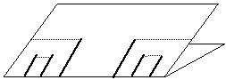

Divide each of the two end pieces into thirds along the crease of the large sheet, and make cuts at these marks halfway to the newly formed folds.
Fold the two middle pieces bending both ways as in the previous step.
|  |
| Fold the two middle pieces on the dotted lines. |
| Cut ... |
| and fold |
Return to A. The Cantor middle thirds set.